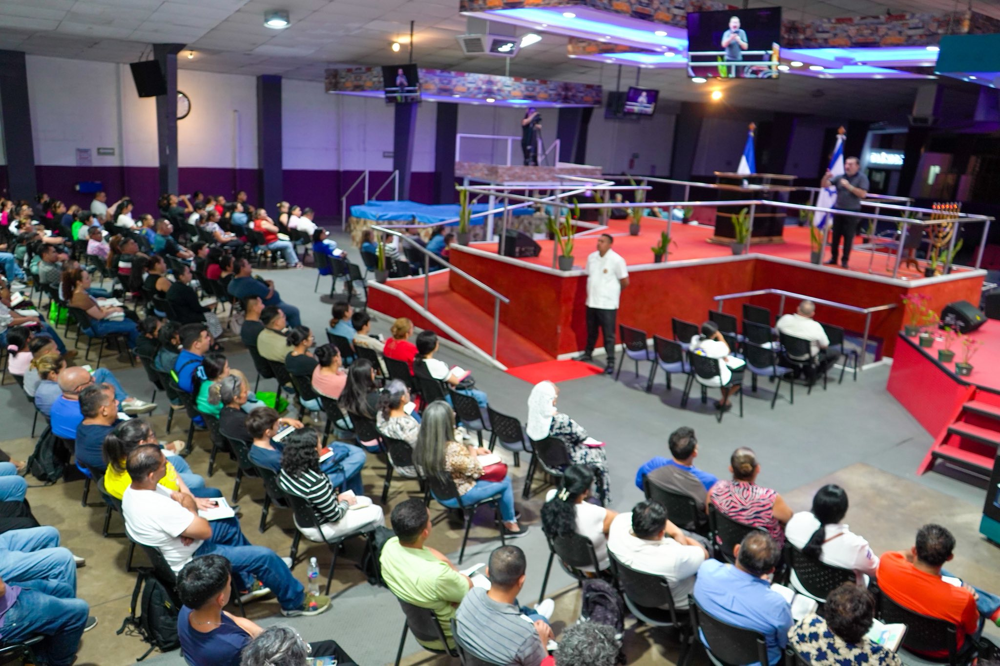

Cimentados en la Palabra de Dios
Soyapango, San Salvador. Proclamando la Verdad con fidelidad por más de 25 años.
Horarios de Reunión2026: El Año del Cambio
En la IBB Pueblo de Israel, nos enfocamos en la transformación integral de la familia a través de Jesucristo. Trabajamos por una renovación espiritual profunda en todo Soyapango.
"De modo que si alguno está en Cristo, nueva criatura es; las cosas viejas pasaron; he aquí todas son hechas nuevas."
— 2 Corintios 5:17
Nuestra Historia
Desde nuestra fundación en el año 2000, hemos permanecido firmes en Soyapango, San Salvador, como un faro de sana doctrina y amor fraternal.
Misión
Glorificar a Dios mediante la exposición fiel de Su Palabra.
Visión
Impactar generaciones en San Salvador con el Evangelio.

Nuestro Canal de YouTube
Accede a nuestros sermones, cultos en vivo y enseñanzas bíblicas desde cualquier lugar.
Ir al Contenido OficialHorarios de Actividades
DEVOCIONALES:
06:00 AM - 07:30 AM
08:00 AM - 09:30 AM
10:00 AM - 12:00 PM
ADORACIÓN:
04:00 PM - 05:30 PM
Ubicación
📍 Soyapango, San Salvador
Final Calle 5 de Noviembre, Soyapango.
📞 Teléfono: 2255-1500